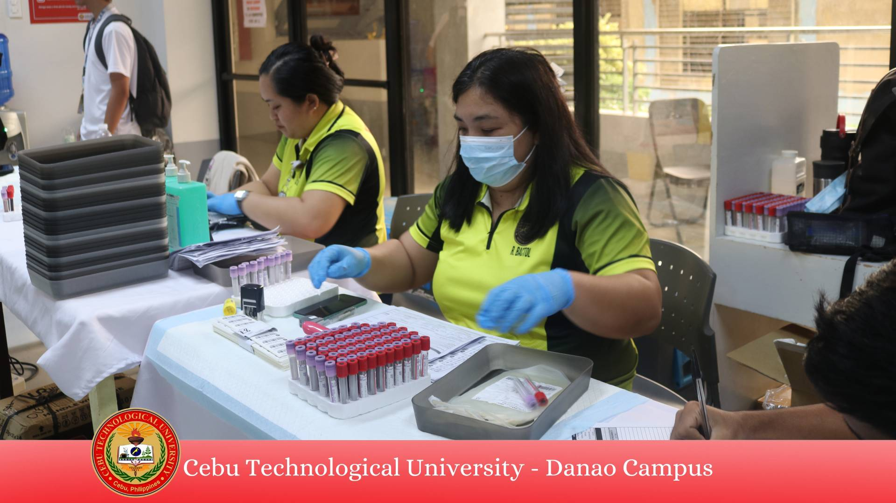
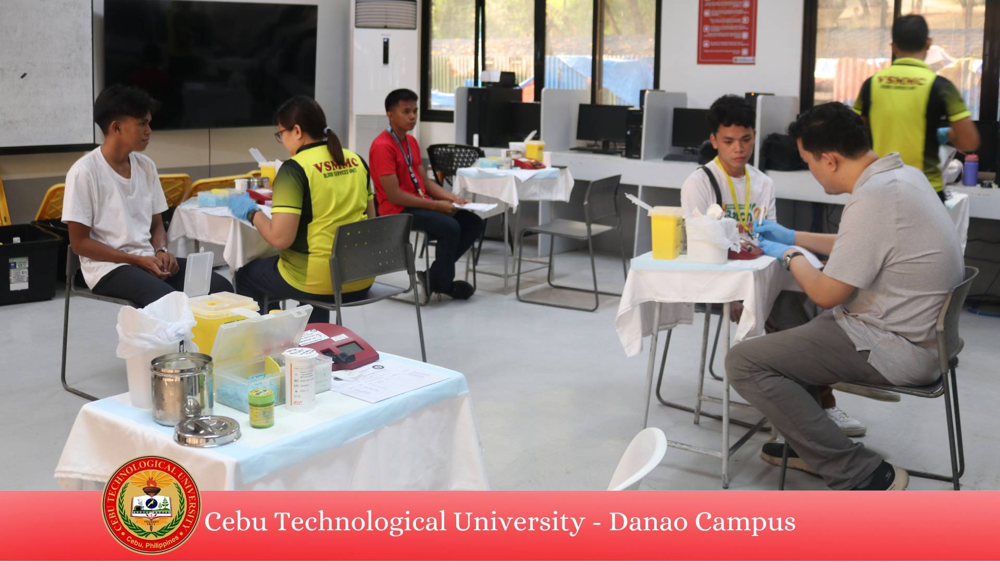
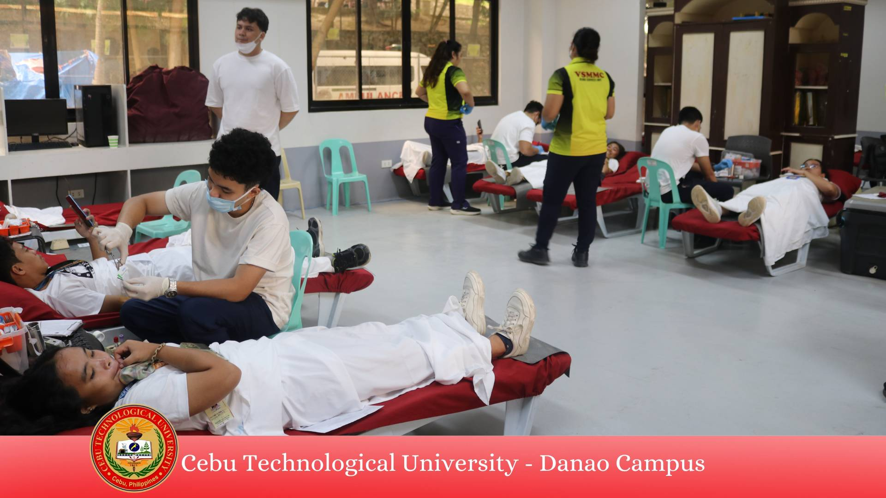

“𝐂𝐞𝐛𝐮𝐓𝐞𝐜𝐡 𝐃𝐚𝐧𝐚𝐨 𝐂𝐚𝐦𝐩𝐮𝐬 𝐣𝐨𝐢𝐧𝐞𝐝 𝐭𝐡𝐞 𝐥𝐢𝐟𝐞𝐥𝐢𝐧𝐞, 𝐭𝐫𝐚𝐧𝐬𝐟𝐨𝐫𝐦𝐢𝐧𝐠 𝐥𝐢𝐯𝐞𝐬 𝐭𝐡𝐫𝐨𝐮𝐠𝐡 𝐁𝐥𝐨𝐨𝐝 𝐃𝐨𝐧𝐚𝐭𝐢𝐨𝐧 𝐃𝐫𝐢𝐯𝐞𝐬” The National Service Training Program (NSTP) office of CTU Danao Campus in partnership with Vicente Sotto Memorial Medical Center (VSMMC) conducts three-day Blood Donation Drive which runs from September 26-28, 2024 at the CME Building. The event encourages students, faculty, and staff to participate. It aims to increase blood supply, raise awareness, and engage community to foster a compassionate society. Blood Donation is essential in addressing healthcare needs, it is an act of kindness that can save lives and improve the health of those in dire need. As of the 2nd day of Mobile Bloodletting Drive, there are in total of 137 successful donors and were expecting more to come in the last day. Through the active participation of donating blood, it fosters a spirit of solidarity and compassion, reminding everyone that a single donation can save multiple lives..
CTU Danao Joins Blood Donation Drive
Published on September 27, 2024
Source:https://www.facebook.com/ctudanaoofficial


